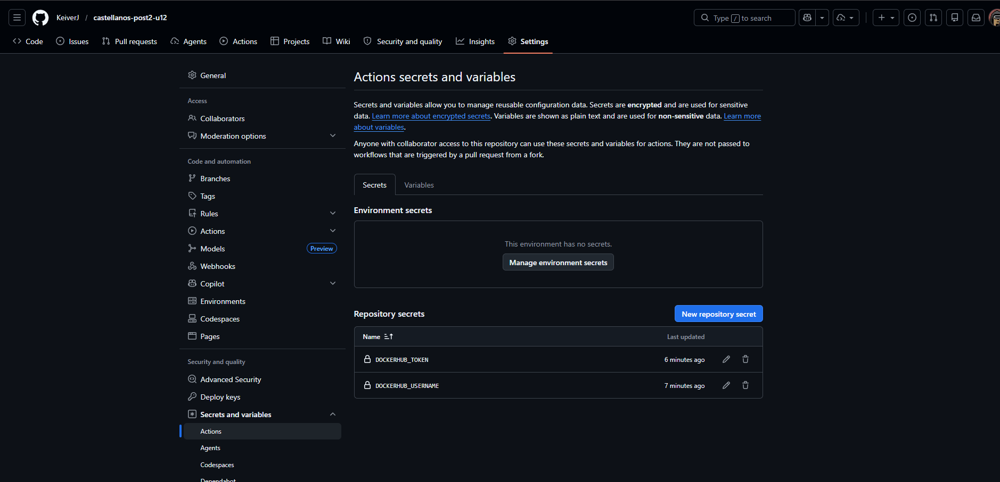
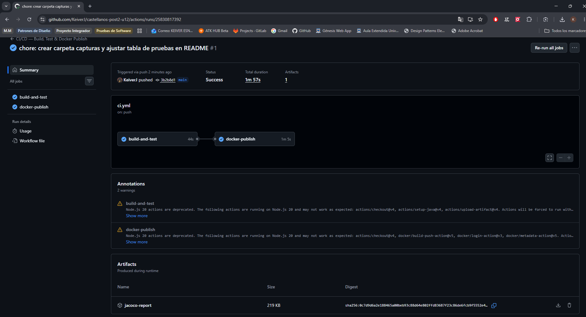
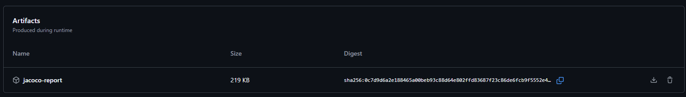
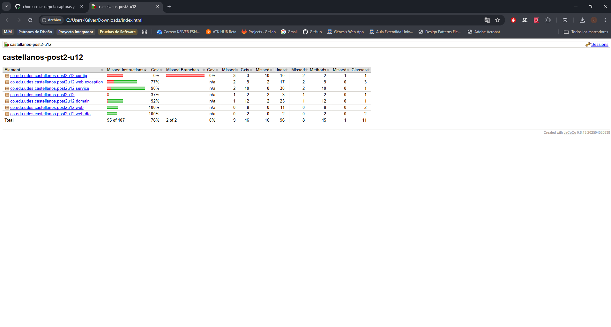
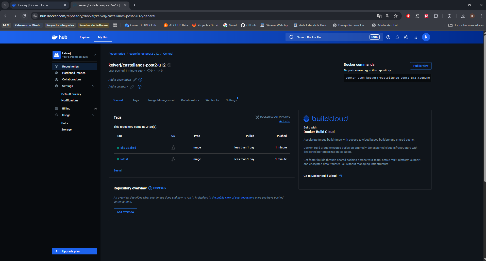

Diseñar e implementar un pipeline de integración y entrega continua (CI/CD) con GitHub Actions que automatiza la compilación, ejecución de pruebas con reporte de cobertura JaCoCo, construcción de la imagen Docker con multi-stage build, y publicación en Docker Hub, activándose automáticamente en cada push a la rama principal del repositorio.
| Tecnología | Versión |
|---|---|
| Java (JDK) | 21 (Temurin) |
| Spring Boot | 3.4.5 |
| Maven | 3.9+ |
| JaCoCo | 0.8.13 |
| Docker | Multi-stage build |
| H2 Database | Runtime (perfil dev/CI) |
| PostgreSQL | 16 (perfil prod) |
| GitHub Actions | v4 (checkout, setup-java, upload-artifact) |
El pipeline consta de dos jobs encadenados que se ejecutan secuencialmente:
push a main
│
▼
┌───────────────────┐ ┌─────────────────────┐
│ build-and-test │ ──▶ │ docker-publish │
│ (CI) │ │ (CD) │
│ │ │ │
│ • Checkout │ │ • Checkout │
│ • JDK 21 + caché │ │ • Login Docker Hub │
│ • mvn clean verify│ │ • Extraer metadata │
│ • Upload JaCoCo │ │ • Build & push image │
└───────────────────┘ └─────────────────────┘
| Job | Propósito | Trigger |
|---|---|---|
build-and-test |
Compila con Maven, ejecuta pruebas y genera reporte JaCoCo | Push y PR a main |
docker-publish |
Construye imagen Docker multi-stage y publica en Docker Hub | Solo push a main |
El job docker-publish depende del éxito de build-and-test mediante
needs: build-and-test y solo se ejecuta en push directo a main
(no en pull requests).
Las credenciales se gestionan exclusivamente con GitHub Secrets para evitar exposición en el YAML:
| Secret | Descripción |
|---|---|
DOCKERHUB_USERNAME | Nombre de usuario de Docker Hub |
DOCKERHUB_TOKEN | Access Token de Docker Hub con permisos Read & Write |
Ruta: Settings → Secrets and variables → Actions → New repository secret

Al hacer push a main, el pipeline se activa automáticamente. El historial
de GitHub Actions muestra las ejecuciones exitosas con ambos jobs en verde.

El plugin JaCoCo genera un reporte de cobertura en la fase verify de Maven.
Este reporte se publica como artefacto descargable en GitHub Actions con retención de 7 días.


La imagen se publica automáticamente en Docker Hub con dos tags:
latest — siempre apunta al último build exitososha-<commit> — tag inmutable vinculado al commit específicodocker pull keiverj/castellanos-post2-u12:latest

La suite incluye 10 tests de integración que cubren todos los endpoints CRUD, validaciones y errores:
| Prueba | Descripción |
|---|---|
contextLoads | Verifica que el contexto Spring se carga correctamente |
debeResponderPaginaRaiz | Valida respuesta del endpoint raíz |
debeResponderHealthEnEstadoUp | Comprueba que el actuator reporta UP |
debeListarProductosSembrados | Verifica listado de productos sembrados |
debeObtenerProductoPorId | Obtiene un producto existente por ID |
debeCrearUnProductoNuevo | Crea un producto y valida respuesta 201 |
debeActualizarUnProductoExistente | Actualiza un producto y valida cambios |
debeEliminarUnProductoExistente | Elimina un producto y valida respuesta 204 |
debeRetornar404CuandoProductoNoExiste | Valida respuesta 404 para ID inexistente |
debeRetornar400CuandoDatosInvalidos | Valida respuesta 400 para datos inválidos |
| Decisión | Justificación |
|---|---|
| Multi-stage build | Reduce el tamaño de la imagen final (solo JRE, sin Maven ni fuentes) |
| JaCoCo en fase verify | Genera el reporte de cobertura después de ejecutar las pruebas |
| Caché de Maven | Configurado con actions/setup-java cache: maven para acelerar builds |
| Condición de rama para CD | docker-publish solo en push a main, evita publicaciones desde PRs |
| Tags semánticos | latest + sha-<commit> para trazabilidad de versiones |
| GitHub Secrets | Las credenciales nunca se exponen en el YAML del workflow |
| H2 en CI | El perfil dev usa H2 en memoria, eliminando dependencia de BD externa en el runner |